MELODI / 面向轻量候选排序的相似性与身份解耦
Quoc Phong Nguyen、Vuong Le、Volodymyr Vaskovych 与 Julien Monteil 来自 Amazon International Machine Learning，四位作者署名机构相同。论文研究同一请求中，如何利用共享行为历史为数百到数千个候选打分，并用独立的候选信息支路保留物品自身属性。初版于北京时间 2026 年 11 月 24 日提交。核对论文和 arXiv 入口并检索同名项目后，未核验到独立公开代码或项目页。arXiv:2611.31940
候选感知排序能针对不同候选突出用户的不同兴趣，但实时服务限制了逐候选联合处理用户历史的计算量。排序还需要同时保留候选自身的属性和候选与相关历史的相容性。
1. 背景和问题
1.1 候选排序为什么需要重新读历史
大型推荐服务通常由候选生成和排序串联。候选生成可能面对数百万物品，分别编码用户和物品，允许预先产出物品向量并用简单的相似度搜索。在排序阶段，系统将上游返回的数百或数千件物品连同近期交互、请求特征送进打分器。此时可利用比较丰富的交互，但一个用户在一次请求里往往有许多待评候选。即使对单个用户和物品的一次融合很便宜，把它按候选数和有效历史长度展开后也可能超过整场请求的时延预算。MELODI 将候选集合视为外部给定，质量结果只评价这一步的先后次序。在公开全目录协议里，作者扩充的是评价阶段的打分集合，也没有改造实际候选生成流程。
一个同时在看跑鞋和相机配件的用户，浏览记录里可能交替出现两类条目。跑鞋候选的有效证据主要来自此前的运动装备，镜头候选则应该关注摄影交互。若将历史一次性压缩为通用向量，之后每个候选只能通过那个向量再找匹配线索。当历史有多种兴趣、某一类交互稀疏或有效信息已经压缩到少数坐标时，候选打分器无法再直接定位原始证据。SASRec 式的候选无关历史表示换取一次编码和低成本内积，候选相关模型则保留按目标选择事件的机会。论文希望保住后者的行为选择能力，同时把候选加入之前的历史变换留在共享计算里。
早期融合可把目标直接拼到历史序列，并以目标位置的输出预测。一次双向自注意力就能让历史 token 也读取目标，由此对不同目标产生不同历史表示。代价是历史层输出随目标变，单独缓存历史的中间向量无法复现拼接后的分数。DIN 把早融合移到软选择阶段，用一个低维感知机为每组历史条目和候选计算权重，随后加权池化，可共享物品侧预处理，但激活函数仍需看每个组合。DIEN 还建模目标条件的兴趣演化，CAN 则让目标决定作用在历史项上的小网络。它们将表达能力安排在不同的计算阶段，候选增加时借助批量化可以摊薄启动成本，但要处理的候选相关中间量一般仍随组合数增长。
1.2 相容性与物品自身信息为什么应分别处理
论文引言用节日装饰和装修工具区分两种证据。节日临近可能整体抬高装饰品被购买的概率，即使某位购物者此前没有对应季节的浏览。电钻对近期看过油漆、固定件和工具的人更合适，来自用户行为与这件商品的关系。这两个例子同时说明，身份分支的“身份”是目标自身的可学习表示，可以来自物品文本、表征坐标交叉和物品特征，未必需要专用的离散编号。季节或其他请求特征也不必进入身份支路本身，打分器可以在后面合并它们。相似分支计算的则是当前目标与选中历史的相容性，含义比一个表示基础热度的偏置更接近条件化交互。
DIN 的末端打分函数也可以直接收到候选向量。论文与它的区别在于，DIN 的历史加权向量同时包含历史内容和目标决定的权重，相容性埋在这个向量中，MELODI 在加权池化之后有专门的逐坐标交叉向量。这是一项计算与建模结构约束。两个支路共同参与同一训练损失，也共享候选输入的投影，所以它们仍可能共同利用高频物品或流行度代理线索。单看支路名称无法把输出解释为去偏后的偏好和纯流行度，也无法从一个头的注意力权重推断该行为具有购买因果效应。合分以前保持输入依赖边界，可以说明每个张量产生的条件，实际收益仍依赖实验。
作者还区分了“历史权重如何产生”与“相容算子何时调用”。一个候选可以决定每项历史有多重要，逐项相容性可以在此前或此后计算。先逐项处理有能力保留某件物品触发的非线性反应。先汇合历史再交叉可以减少算子调用，却有可能在相似运算开始前就混掉这件物品的独特特征。论文的关键做法是给出允许交换的算子类，并让注意力在交换时提供完全相同的权重。因而这里的数学保证只比较同一算子的两个执行顺序，并不证明比任意一个更重的早融合模型表达更充分。若业务确实依赖两个连续事件的顺序、某件商品超过阈值的强匹配，或历史 token 和目标共同更新造成的多跳特征，限制相似分支为一个线性算子就可能带来表示代价。
1.3 两种效率机制对应不同的服务现象
算子可以交换以后，历史仍需按候选选择。举例来说，一千件候选共享五十个历史条目，每个注意力头还有五万个候选与历史的权重位置。只是专家交叉不再对这五万个位置分别执行。只要处理流程在每个候选到来前能完成历史条目的查表、带位置编码的投影与归一化，历史的键和值就可以一次计算供同一请求使用。目标查询、带目标视角的加权汇总、身份变换和后面的打分仍要批量进行。因而先池化只减少重交叉的调用，历史键值复用则减少历史预处理次数。一个模型可能满足前者却让候选过早进入历史编码而失去后者。
部署比较还依赖候选数分布。候选很少时，一个批量友好的 DIN 激活内核在较小张量上计算，重复历史的损失也有限。候选增加后，若激活中间量快速放大，较轻的标准矩阵乘法和共享投影才有明显优势。论文的实测以单请求共享历史为基础，这与把不同用户的候选混成一批是两种组织方式。若上游按分页分块派发、每块甚至每件候选独立请求，只有保持历史状态的生命周期和声明一致，才能实际利用一次处理的优势。对一条完整请求而言，历史长度、候选数和其他特征的数据拷贝都能改变时延拐点。
位置编码给预计算划了另一条边界。同一物品在位置一和位置五十可以投影成不同的历史键与值，加入位置以后再做的归一化也会改变各坐标。服务收到一条完整、顺序已确定且掩码已知的历史时，可以生产精确共享状态。单纯在目录里按物品编号保存键和值，无法保证发生在不同位置的同名物品用到正确的表示。若尽量推至全局预计算，至少还要明确位置和有效序列的构造口径。本文小规模历史设置给出了一个可观察的算力收益案例，其结果并未覆盖超长序列、跨时段多历史拼接或请求状态持续更新的场景。
2. 方法
2.1 从逐事件比较到池化后比较
框架输入是一个用户的最近交互矩阵和该请求的候选表，每个候选最终得到一个标量。固定候选后，先用一组权重形成历史摘要。式（1）至（3）在相同候选和权重下写出两条路径以及它们的精确等价条件。
符号解释：$X$ 是长度 $S$ 的历史，$x_i$ 是第 $i$ 项的适配后向量，$t$ 是当前候选，$\alpha_i$ 是固定此次输入后对应的权重，非负且合计一。$u$ 是该候选的历史池化，$\phi$ 是相容算子。$\psi_{\mathrm{SP}}$ 先调用算子再聚合，$\psi_{\mathrm{PS}}$ 交换顺序。中间等号依赖固定 $t$ 时 $\phi$ 对历史输入满足线性。 该等式允许权重由整个历史和当前候选一起决定，交换的是固定权重下的相似计算与加权求和。两个路径若重新学习不同注意力权重，不能直接套用等价。DIN 的池化可看成取 $\phi(u,t)=u$ 的特例，然而它的权重网络仍逐对运行。MELODI 保留多头候选条件权重，并把相容计算显式安排在每个头池化之后。
符号解释：$x$ 是某个历史项或同空间中的池化向量，$A(t)$ 是由目标决定的矩阵，$\odot$ 为逐元素乘积，$\eta(t)$ 是与 $x$ 等宽的目标映射。第二式是第一式的对角情形。若直接用等宽的 $t$ 当作映射，对交叉向量求和可还原点积。目标映射也能由低秩门控网络或者其他非线性变换产生。相反，例如对每个历史标量平方后聚合通常不同于先聚合后平方。命题因此约束的是相似算子的历史槽位，编码器的历史侧预处理和末端打分函数可以含非线性。
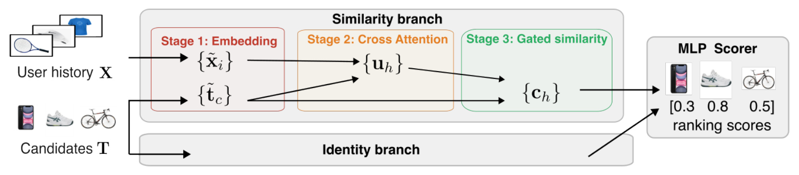
Figure 1 从左侧同时送入交互历史与候选。顶部先用同一个投影空间和归一化处理输入，然后以目标为查询，从同一历史中得到逐头摘要。交叉框的两路输入分别来自摘要和当前候选，输出一个相容向量。底部路径从候选开始，沿物品自身表征进入打分器。右端示意的三个分数是每个候选各自的排序标量，插画中三件商品都沿同一机制处理，图示数字仅示意最终如何排序。分开读这些箭头有助于发现两个容易混淆的操作。一是目标在相似分支中参与两遍，先确定历史权重，再决定如何加工被汇合出的历史信息。二是身份路径也要为候选计算特征，但它在进入末端前无需读取任意用户的行为序列。
相似支路和身份支路可以在候选打分器中发生进一步非线性合成，论文默认只把交叉结果送给公开模型的末端网络。历史缺少有效事件的情况下，相似输入按业务掩码处理或降级，身份向量还可提供物品自身证据。这个结构允许把无历史情形归到明确的接口，但全掩码的计算行为及新用户收益没有在结构图中被检验。训练时两个支路都由共同的目标反向更新，模型不会直接收到一条标签指出某个购买出自物品热度还是历史匹配。部署时也要保持分支拼接的语义，若为求方便把原始候选或额外上下文提前混入历史侧，再用图中的共享状态做复用，便需要重新核对输入依赖和等价。对于论文设置，图中共享的是投影与归一化的参数及候选无关的历史计算，针对每个候选得到的注意力和池化结果依然不同。
2.2 共享历史投影与目标条件注意力
实现采用冻结的物品向量和可训练投影。历史带位置向量，目标走不加历史位置的同一投影层和归一化，再从各自分支构造注意力。附录式（5）至（6）给出投影位置。
符号解释：$x_i^{\mathrm{raw}}$、$t_c^{\mathrm{raw}}$ 是历史和第 $c$ 个候选的原始向量。$\operatorname{proj}$ 是共享映射，$\operatorname{pos}_i$ 是位置参数，$\operatorname{LN}$ 是共享 LayerNorm，历史上的 $\operatorname{Dropout}$ 用于训练。两路输出都是宽度 $D$。共享归一化减少冻结向量尺度不一致影响，目标分支仍保留物品表征。 令 $\tilde X$ 与 $\tilde T$ 分别收集整条历史和整组目标，式（7）至（12）可以连写成以下张量过程。
符号解释：$H$ 是头数，$h$ 是头索引，$d$ 是单头宽度。$W_q,W_k,W_v$ 分别投影查询、键和值。同一个 $W_v$ 也将目标投影为后面交叉用的 $V_t$。$\operatorname{reshape}_H$ 是逐张量拆头，$Q_h$ 形状为 $C\times d$，$K_h,V_h$ 是 $S\times d$。$\alpha_h$ 在合法历史范围按行归一，形状为 $C\times S$，池化的 $u_h$ 为 $C\times d$。平方根缩放让头宽变化时点积的量级更稳定。$D_u=Hd$ 可以大于或小于输入宽度 $D$。
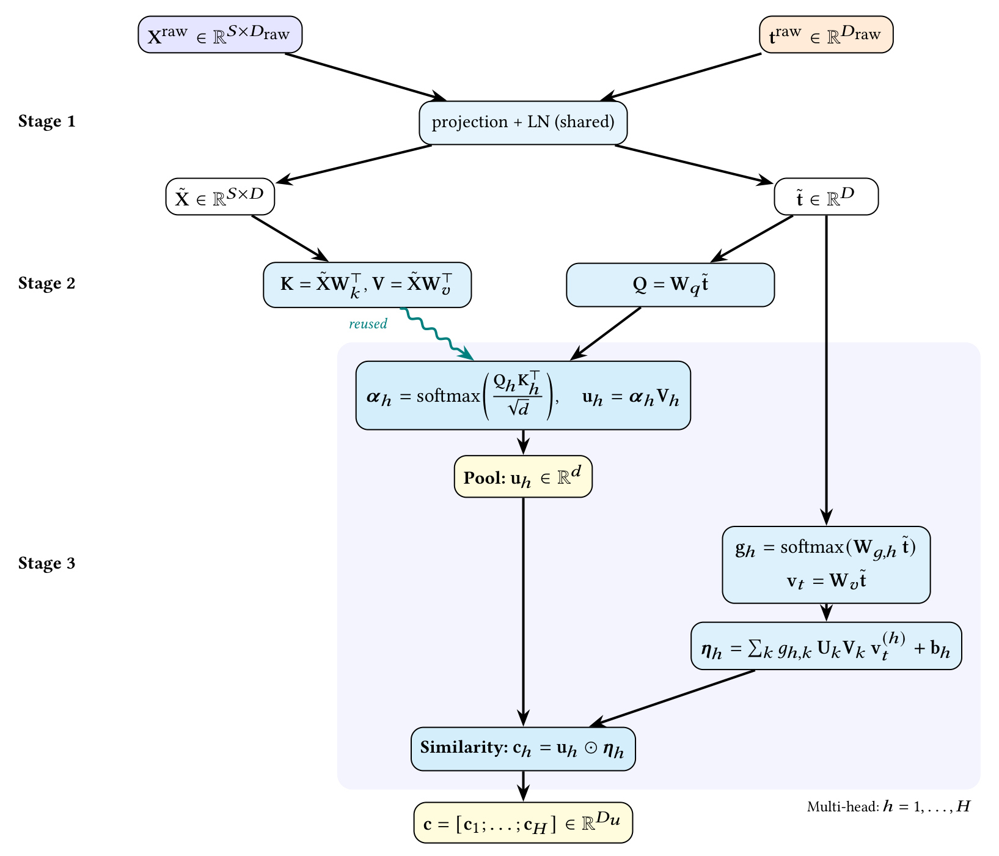
Figure 2 自上而下展开相似支路。顶端两个输入通过同一投影与归一化，左侧蓝框根据历史计算键和值，右侧蓝框根据目标计算查询。浅色背景圈住每个注意力头内部的计算。青色波浪线所指的键和值穿过一次历史编码边界以后可被多个候选读取。目标到查询的箭头仍逐候选运行，因此即使两件物品读取完全相同的键和值，若其查询不同，也会对同一组历史产生不同的池化向量。只有每个头的权重分布确定后，值的加权求和才产生待交叉的摘要。候选越密集，这段乘法越容易打包成规整的矩阵操作，但仍保留所有有效候选到历史位置的得分。
第三阶段的右侧分支把归一化目标发送给按头门控和值投影，产出相容性调制向量。左侧池化摘要只在阶段末端与调制向量逐元素相乘。所以目标调制可以依候选呈非线性，同时对固定候选可以把这次乘法放到池化之前或之后，得到相同的头输出。末端是将每个头的结果串接，合并以后交给 Figure 1 的打分器。图里没有强调位置注入，但式（5）将它放在历史 LN 之前，运算缓存应从组成好且位置已确定的历史生成。工程验证可以把每个候选重复跑完整路径的分数与合批共享路径逐项比对，还需覆盖重复物品、不同历史有效长度和填充。候选依赖只进入查询和后半段，是复用有效的直接条件。若在左侧历史变换引入混合候选的自注意力，绿色箭头标出的键值就会跟候选一起变化，原来的共享前提随之消失。
2.3 按头门控交叉和身份分支
每个头拥有独立门控投影，门控读取完整候选表示，而专家仅在单头子空间操作。将附录式（16）至（21）写在一起，省略等价的批量乘法下标。
符号解释：$K_{\mathrm e}$ 是专家数，区别于注意力键张量 $K$。$W_{g,h}$ 按头给出门控，$g_{h,k}$ 是第 $h$ 头为专家 $k$ 分配的权重。$U_k,V_k$ 是秩参数为 $r$ 的低秩因子，形状各为 $d\times r$ 和 $r\times d$，所有头共享。$v_t^{(h)}$ 是共享值投影得到的目标头切片，$b_h$ 是目标映射内的偏置，$\eta_h$ 是调制向量，$c$ 是串接后的相容特征。偏置位于与历史相乘的括号内，零历史在该算子下仍产生零相容向量。同一个专家池在各头由不同权重混合，使物品能够按照不同的兴趣子空间选择不同的参数组合。
符号解释：$N_{\mathrm{cross}}$ 是这种交叉的专家与门控权重数，$N_{\mathrm{self}}$ 是宽度为 $D$ 的对照自交叉权重数，二者均忽略偏置。$H$ 个门控各看完整输入，多出的门控权重可能抵消专家缩减。公开实验中 $D=d=64$ 且 $H=4$，所以单头专家相对宽度为 $D$ 的自交叉没有尺寸节省，同时相似输出宽度是 $256$。论文的轻量指共享后的计算路径，整模型训练参数仍多于基础 DIN 或单层目标 Transformer。 身份支路使用独立的目标自交叉，保留标准残差。附录式（13）至（15）给出自己的目标门控及专家混合，式（25）从两支路预测标量。
符号解释：$W_{\mathrm{id}}$ 是身份分支的全局门控投影，$U_{\mathrm{id},k},V_{\mathrm{id},k}$ 是该支路独立的专家矩阵，$M_{\mathrm{id}}$ 为混合矩阵，$b_{\mathrm{id}}$ 为偏置。$\tilde t_{\mathrm{id}}$ 用投影候选自交叉并加入候选残差，$[\,;\,]$ 代表拼接，$\hat y$ 是用于排序的标量，公开模型的末端用宽度 $D$ 的隐层与 ReLU。工业配置进一步整合请求和不同事件历史的信息。相似支路去残差用于隔离直接身份输入，但加回历史 $u$ 仍对 $u$ 线性。加深实际测试的相似交叉会让后层依赖此前交叉状态，论文只给默认单层提供等价保证。
2.4 目标函数与请求内推理
公开与工业任务的监督不同。公开下一物品用正负配对，工业购买排序用单条日志候选的二分类。以下为论文指定的两类目标的标准逐样本写法。
符号解释：$\sigma$ 为 sigmoid，$s^+$ 和 $s^-$ 是同一训练历史下正负候选的标量，$s$ 为某工业候选分数，$y$ 为购买标记。BPR 推大同一历史下的正负分差，BCE 用购买标签约束输出。公开实验按验证 MRR 选择检查点，工业实验按验证 NDCG@20 选择。两支路、归一化和投影随同一目标学习，冻结的物品文本向量不更新。工业负例从同请求未购买候选按固定比例抽取，其分数的概率校准不能仅从当前排序表推断。
符号解释：$C$ 是共享历史的候选数，$T_{\mathrm{shared}}$ 表示历史查表、位置、归一化和键值投影等固定工作，$T_{\mathrm{per}}$ 表示目标投影、注意力、交叉、身份及打分的单候选工作。三个式子表达展平实现、请求内共享和摊到单候选的工作量，属于结构核算。实际处理器执行并非严格线性，分块、线程调度和内存带宽也影响时间。普通复用路径在本次调用结束后释放状态。购物行为有序排列并加了位置和掩码，缓存准确命中以同一请求的同一条已组装历史为边界。工业 B 的千候选形状中，共享历史只占复用后时延约百分之三，再压缩固定项的潜在收益已较小。同一硬件上的候选数量扩张则仍需要处理 $CT_{\mathrm{per}}$ 这部分。
3. 实验结果
3.1 公开评估、归一化与多种候选集
Steam 有 281,354 名用户和 11,961 件物品，ML-25M 有 162,541 名用户和 32,720 件物品。两者按每个用户的时间顺序留出倒数第二和最后一项做验证、测试，其余训练。Steam 保留全部合格前缀，ML-25M 每用户至多最近二十个，分别得到 2,706,396 和 3,226,917 个训练例。历史截断或右填充到五十项。所有模型用冻结的 all-MiniLM-L6-v2 物品文本向量，原始宽度 384，经可训练投影到 64。训练采用 Adam，学习率千分之一，训练批大小 1,024，观察验证 MRR，耐心十轮且最多二百轮。测试给每个正例配相同的九十九个随机负例，且负例排除该用户完整序列。HIT 看正例是否出现于截断位，NDCG 按位次折扣该命中，MRR 对首个正例排名取倒数后按用户平均。
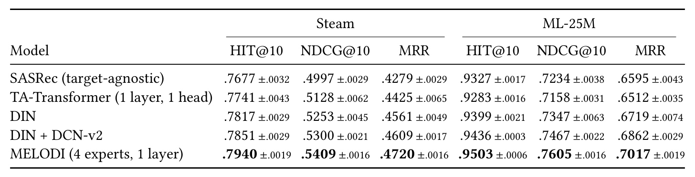
Table 2 左侧列组是 Steam，右侧列组是 ML-25M，每组的三列依次问前十是否命中、命中有多靠前和平均倒数排名。表中每个正负号后的数是三次训练样本标准差，体现换初始种子等训练随机性后的散布。固定的一层四专家 MELODI 对两套数据都未按测试结果挑结构。两组都用相同的模型选择指标，报告的首十位和倒数排名可说明提升涉及不同的头部位置。对 Steam，最强对照 DIN 加自交叉的 NDCG@10 是 .5300，MELODI 为 .5409。对 ML-25M，相应数字为 .7467 和 .7605。两组 MRR 相对最强行的绝对差分别是 .0111 和 .0155。作者说相对 DIN 的平均 MRR 提升百分之三点五和四点四，对比对象是 DIN 原版的 .4561 和 .6719。若读者把这个百分比套到带交叉的 DIN 上，就会高估领先幅度。HIT@10 在两个数据集的领先绝对值是 .0089 和 .0067，说明排序位置本来较好的电影集合仍有可观察改进，但指标接近上界后相同数量级的增量对应不同的头部位次变化。
同一对模型相互比较还要区分两种不确定性。表中标准差跨训练种子，无法解释同一模型在不同用户上的效果分布。作者又针对每模型一次训练点，用相同用户的成对重抽样评估差分，执行一万次 bootstrap，在两套数据三项指标上的所列差分区间均排除零。这个区间条件是给定检查点和候选抽样方案，未把所有训练随机性和新负样本集合合到同一误差估计中。由于一层单头目标 Transformer 是为了贴近工业对照而预设的轻配置，这张表支持在比较集合内的质量收益。要讨论换成更大模型以后是否还能占优，要结合附录容量对照的结果。
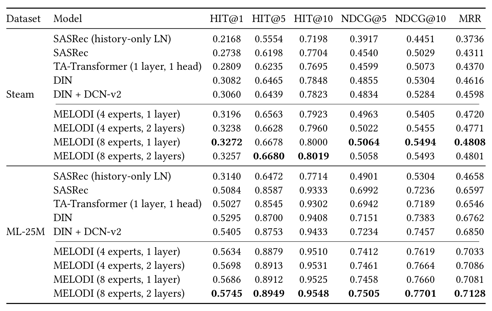
Table 3 扩充到首位、前五和前十的命中，并分别打分前五、前十的折扣增益。每个数据集的前五行是相同输入处理下的基线和一条归一化控制，后四行是专家数四或八、相似交叉深度一或二的组合。标题中的完整公共结果指指标列表比上一表更全，仍使用九十九随机负样本的集合。换为不对候选做 LN 的 SASRec，Steam MRR 从 .4311 降到 .3736，ML-25M 从 .6597 降到 .4658。这是一项比许多结构改动更大的尺度效应。历史已有归一化而参与内积的目标分布不齐，原始冻结向量的长度就可能影响排名，修复这一点能让目标无关历史基线获得公平对照。Steam 的默认 MELODI MRR 为 .4720，最强的单次基线 DIN 为 .4616，与三种子表里 DIN 加交叉领先的顺序有别。将两表并读可以看到，较近的基线差距会随种子和呈现方式变化。
超过默认容量时，Steam 的 MRR 由八专家一层的 .4808 领跑，而八专家二层以 .8019 拿到更高的 HIT@10。ML-25M 的八专家二层在六项均最高，MRR 为 .7128。作者说明，若依据验证 MRR 选择，两套数据都会选八专家二层，Steam 的测试 MRR 反而比八专家一层低 .0007。这个差值只来自一次训练，体现了指标和切分上的取舍，不能确定两个容量谁更稳。更重要的是，二层版本属于实际运行可以考虑的变体，论文的算子等价保证针对默认单层。若上线希望同时采用先池化的形式和加深交叉，需检查后层是否仍能以线性方式接受历史。网格里较大的分差也同时涉及身份模块变化，单独归因专家数或深度有赖后面的隔离实验。这里应先选服务器实际承担得起的候选相关容量，再比较受相同时间约束的那几行。
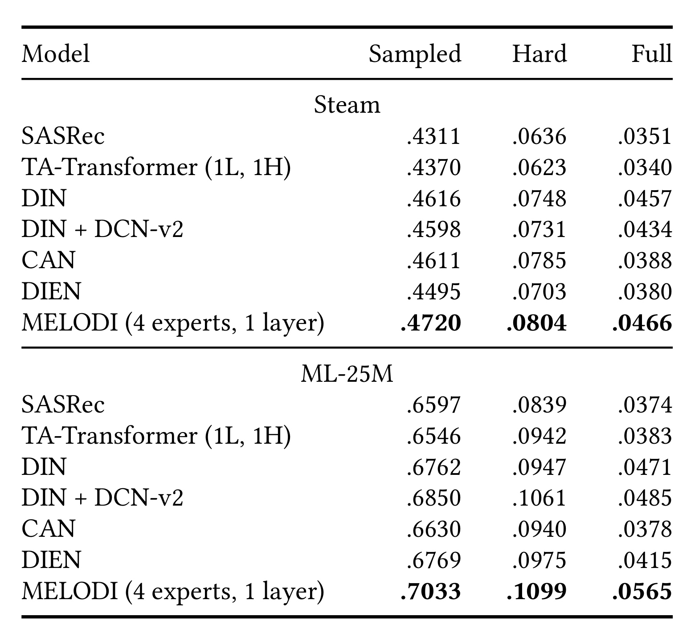
Table 4 固定每种模型的一次训练结果，依次用九十九个均匀负例、九百九十九个由固定 MiniLM 近邻搜索找出的困难负例，以及用户序列以外的完整目录重打分。后两列的 MRR 比抽样列小很多，主要反映分母内的候选密度与竞争强度变化。困难集对共享文本向量的候选尤其有约束，因为语义邻域提供了更相近的干扰。Steam 上默认模型的困难 MRR 是 .0804，CAN 为 .0785，间距 .0019。全目录的 .0466 只比 DIN 的 .0457 高 .0009，原文另外报告首位命中率 DIN .0186 而 MELODI .0177。两件事可以同时成立。平均倒数排名能从二至多个较低位置的整体改善中获益，首位命中却只记录正例能否排第一。
ML-25M 全目录为 .0565，带交叉 DIN 为 .0485，印刷精度两数相减为 .0080，正文用未显示精度报告 .0079。公开候选集里给同分的目标排在负例之后，表中重打分无须按新负例重训练。配对用户重抽样的 MRR 区间因此帮助判断选定检查点相对于这些候选的表现，对线上曝光和后续策略反馈没有直接观测。SASRec 与目标 Transformer 的次序也随候选协议反转，此处最有分辨力的结果是默认模型在两套数据、所列三种集合的 MRR 都最高，而且在 Steam 最严格集合的领先幅度很窄。若只服务头位，需要单独检查靠前指标，不宜按 MRR 差机械地替换线上目标。
3.2 请求内复用与处理器时延
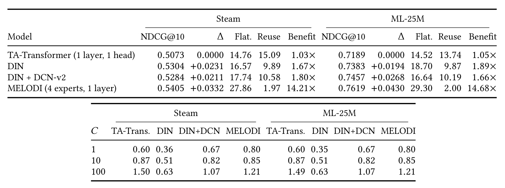
Table 5 上部每个数据集并列单次训练的 NDCG@10、与单层目标 Transformer 的质量绝对差、两种执行路径毫秒和配对收益。下部在更小的候选数上专看共享路径。千候选时，Steam 上 MELODI 展平为 27.86 毫秒，单请求共享历史后为 1.97 毫秒。ML-25M 对应 29.30 和 2.00 毫秒。14.21 倍与 14.68 倍是同一个进程里的展平和复用时间先求比后取中位数，分别取中位耗时再相除可以得到近似但不同的数字。两套数据的候选相关路径形状相同，共享时延近似也与表内现象吻合。与之相比，DIN 在共享模式下约 9.9 毫秒，目标 Transformer 分别为 15.09 和 13.74 毫秒。展平 MELODI 在同表反而比这些基线重，部署接口若继续为每个候选重算历史，会错过测到的优势。
下表的千候选对比不能直接外推到小批量。候选一、十和一百时，DIN 分别约为 0.35 至 0.36、0.51 和 0.63 毫秒，明显快于 MELODI 的 0.80、0.85 和 1.21 毫秒。一百候选的两模型差约六成毫秒，规划预算时还要合上其余链路而非只看相对倍率。更细的重复扫描中，五百候选时两套数据都是 DIN 1.49 毫秒，MELODI 1.64 毫秒，七百以后次序转过来。处理器为第三代 Intel Xeon Scalable，实例为三十二虚拟核、六十四 GiB，计时不含用户侧网络。若要选择同机方案，最好同时保留单请求绝对时间与同机相对比较，让不同框架的固定开销可见。每种公开运行先热身三十次，从三百次计时取最小值，五个独立进程再取中位，并交替两个路径的计时顺序。其结果是低噪声的前向比较，不是请求时延 P50 或 P99。作者做了路径输出一致性核验，最大绝对差为约 $2.2\times10^{-8}$，再次运行时 MELODI 的千候选时间接近两毫秒，但基线同档时延有百分之九至二十五的变化。
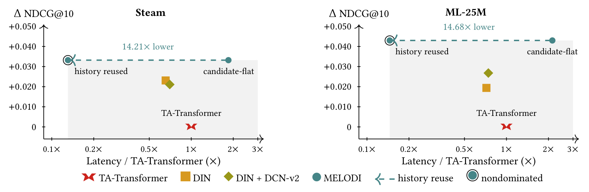
Figure 3 左右分别是 Steam 和 ML-25M，横轴是对目标 Transformer 的时延比，采用对数比例，纵轴是单次训练检查点的 NDCG@10 绝对差。红色的基线点处于一倍与零差附近。两个青色位置属于同一模型，水平箭头表示执行时不重复历史以后在既定质量线上的移动。Steam 的两点纵轴约为 .0332，电影数据约为 .0430，箭头表示的是实现变化而非模型重新训练造成的质量上移。DIN 和带自交叉的 DIN 在两幅图中都落在复用 MELODI 的右下侧，因而在这一固定的一千候选场景被同时以两项指标占优。圆环和阴影帮助识别图上这一组已测候选条件模型的前沿，候选无关 SASRec 被排除，也未画出较大 Transformer。
这幅图的横轴与文字标注并非同一类中位数。箭头的倍率来自进程内配对，点的位置来自各路径耗时的统计后再除基线。服务端做延迟预算时需要按真实请求拆放，观察输入构造、线程竞争、内存占用及对原有召回或重排的影响。这张图能直接用于验证复用的质量是否沿水平方向保持，不能据单个位置断言所有目标请求都存在相同优势。尤其当请求在目标数量较小时大量出现，使用上一表按候选数拆开的速度次序才更接近该服务落点。
3.3 工业日志上的购买排序
两份工业数据的候选已经通过在线上游生成，测试对历史日志中的购买作标签。Industrial-A 有 5,836 请求和 591,286 候选行，Industrial-B 有 5,625 请求和 1,088,853 候选行，每份都有后续时间的测试窗口。Industrial-A 的验证数据来自训练时间范围，Industrial-B 验证用更新窗口。顺序模型使用相同的两类行为历史和同批请求特征，表格基线看相同物品与请求特征。工业 MELODI 输入宽度 256，均用八头、专家秩 32。A 的头宽 64、八专家，通过逐头门控交叉组合两路事件摘要。B 的头宽 32、四专家，事件摘要间改用不直接输入目标的 DCN-v2 交叉。因而工业证据支持同一构造原则的迁移，具体头宽、专家数和事件跨支路用法也有调整。
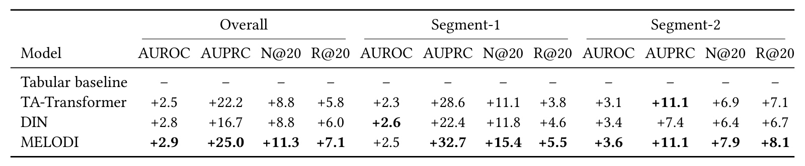
Table 6 的三个列组分别对应总量和两个互斥排序情境。每组有二分类区分度 AUROC、精确率召回率曲线面积 AUPRC 和按请求排序的 NDCG、Recall 截断指标。表格基线一行留空，其余均按本组基线相对变化的百分比呈现。全量对 MELODI 的四项读数为 +2.9%、+25.0%、+11.3% 和 +7.1%，目标 Transformer 的 AUPRC 提高 +22.2%，两种候选感知对照的 NDCG 均为 +8.8%。在总体区分和购买结果较稀少时，AUPRC 往往给出与 AUROC 不同的排序。此表的实际对照也显示，若只看 AUROC 可以漏掉首二十个结果的较大变动，候选集服务若最终只展示少量结果，更要同时跟踪头部位次与命中覆盖。
两个情境分别包含 232,908 和 358,378 行。第一情境的 AUROC 最好是 DIN +2.6%，比 MELODI +2.5% 高，MELODI 的 AUPRC +32.7%、NDCG +15.4% 与 Recall +5.5% 则领先。第二情境 MELODI 和目标 Transformer 的 AUPRC 同为 +11.1%，此相等值只在报告精度成立，MELODI 分别以 +7.9% 和 +8.1% 达到更高的 NDCG 和 Recall。可见两组的头部质量方向较一致，购买区分度的总体优点并非在每个情境都能看到。百分数依据论文报告的三位小数原始指标计算，缺少直接公开的指标分母和置信区间，把 +25% 解读为真实 AUPRC 增加二十五个百分点会错置量纲。两个情境的业务语义也匿名，难以直接据此为另一个系统确定应先接入哪类流量。还有一种容易被忽略的比较是同样的头部覆盖可能产生不同的位次变化。第一情境相对基线的 NDCG 提高幅度明显大于 Recall，但这两项各自使用其基线为分母，无法直接还原名次移动量。若要追究结果是否来自把已经命中的购买项上移，可按原始排名桶统计同一个正样本重新排序后的去向，再核对是不是同时捞到了原本落在前二十以外的候选。按同一请求观察可以避免把流量变化误读为模型把头部重排得更好。
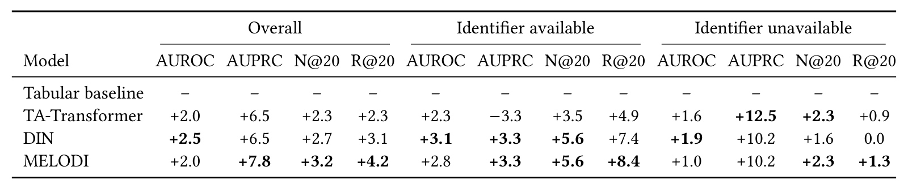
Table 7 将右侧两个列组改为有、无可用用户标识。两组分别有 562,927 和 525,926 行，这个分层依据标识是否缺失或未知，并未按历史长度切分。全量 MELODI 的 AUPRC、NDCG 和 Recall 分别增加 +7.8%、+3.2% 和 +4.2%，它的整体 AUROC +2.0% 与目标 Transformer 同值，DIN 有 +2.5%。可识别用户的 NDCG 提升是 +5.6%，与 DIN 同值，Recall +8.4% 比 DIN 的 +7.4% 更高。缺标识时 NDCG 是 +2.3%，与目标 Transformer 同值，Recall +1.3% 比对照更高，然而目标 Transformer 在 AUPRC 的 +12.5% 优于 MELODI 的 +10.2%。这条分层结果校正了仅看整体的一句结论，因为标识缺失时两个排序目标可以得出不同模型优先级。
还应注意，每个分段以自身的表格基线作分母。一组的 +5.6% 与另一组的 +2.3% 不能给出不带尺度的绝对分差。日志里无用户标识也不代表完全没有可用行为，模型可能仍见到会话级或其他事件历史，论文没有披露对应历史缺失率。和 A 组一起看，购买排序上最稳定的证据在于首二十项增益和召回，同时有不同的 AUROC 与 AUPRC 例外。做进一步研究可先固定排序日志来源，记下用户标识、各类事件覆盖、候选数与历史长度，再按请求层级重抽样。否则同一组内的行数会把来自少数含大量候选的请求当成独立证据，遗漏请求内相关性。对准备给无标识流量选择基线的团队，表中 AUPRC 与 Recall 的分岔还提示关注购买候选标记的稀疏程度。离线复核可对齐两种模型正负候选打分的同请求排序，并回看跨请求热门商品是否在不同用户群里普遍抬分。若最终只用排序分数选择展示前二十条，组内排名是直接目标。若还把分数当作不同请求间的阈值或资源配额依据，就需再查完整精确率召回率曲线和分数校准。现表没披露基础率，两组的百分数无法替代这些测量。
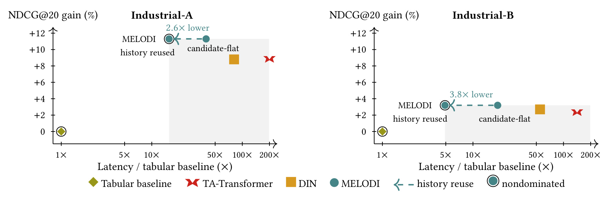
Figure 4 的横轴改成各自工业表格基线的时延倍数，纵轴也改为 NDCG@20 相对表格基线变化的百分数，左右组的倍数与公开的绝对毫秒不可混读。工业 A 在同一千候选计时形状下，从展平的 40.0 倍变为共享后的 15.6 倍，约省 2.6 倍。目标 Transformer 是 201.8 倍，DIN 是 80.9 倍，故同样单位下 MELODI 共享快约 13.0 和 5.2 倍。工业 B 从 18.7 倍到 4.9 倍，约省 3.8 倍，对 142.1 倍和 55.1 倍两个比较对象分别快约 28.7 和 11.1 倍，倍数近似取决于未四舍五入的数据。图的两条箭头固定质量，所以图上浅色区域说明这里的两种基线相对于复用版本同时更慢且 NDCG 更低。表格基线因运算更少仍在两组最左侧。
工业形状的复用倍率小于公开，原因在于共享历史以外仍要完成更宽的交叉、请求特征投影、多事件池化和更重的候选路径。计时以五次热身后二十次迭代的平均值为主，口径不同于公开进程内最小值。附录更激进地排除组装后键、值和查询的计算，A 从 15.6 倍变成 15.7 倍，B 从 4.9 倍变成 4.6 倍。两个实验还将不同数量的掩码、时间衰减和共享特征移出计时，变化不超过一成且方向不统一。它们用于估计后半段成本下限。对只有一条共享历史依赖的实验，用此界可以看到继续压历史固定成本的余量，生产系统仍应保留完整组装成本和其他阶段的排队耗时。
3.4 组件消融、算量和容量对照
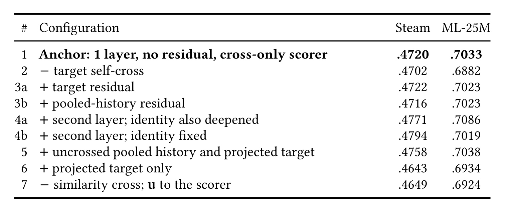
Table 8 第一行是默认四专家一层，后面两列依次看 Steam 和 ML-25M 的 MRR。移除身份自交叉后分别从 .4720 到 .4702 和从 .7033 到 .6882，电影数据对身份路径在这次训练更敏感。只把投影候选额外送末端的第六行分别是 .4643 和 .6934，而同时补未交叉历史的第五行是 .4758 和 .7038。这组对照说明直接把原始候选添加到已经含身份输出的打分器，未必增加新的有用信息。一起加入按候选池化的历史，使末端得到能与之比较的对应项，两组数值都较高。去掉相似交叉、直接把历史摘要送末端的第七行分别低 .0071 和 .0109，千候选时节约约 .8 毫秒。它在 ML-25M 的困难集上反而提高约 .0011 的 MRR，因而默认算子同时存在较好的随机抽样指标和额外候选计算，效果对候选协议敏感。
残差的两种写法要按输入区分。第三行甲加目标残差，固定候选时存在直接偏置项，乙加池化历史仍能写成历史乘以移位后的目标调制。两种变化在这次对照的绝对 MRR 幅度至多 .0010，作者省掉残差的依据包括分支语义。第四行甲同时加深相似与身份，电影 MRR +.0053，乙保持身份容量固定后只改变相似深度，电影反降 .0014，Steam 提高 .0074。附录进一步固定身份容量后，单层四到八专家在两数据集分别 +.0035 和 −.0032，双层分别 −.0088 和 +.0031。总之相似支路规模与身份容量共同变更容易误导归因，表里没有足以量化这些小变动的多种子方差。实际可保留可解释的一层默认作为基线，再判断硬负例与更宽候选的收益是否足以补偿时延。试图用这里的残差小差值选模型前，应测更换种子后方向是否复现。
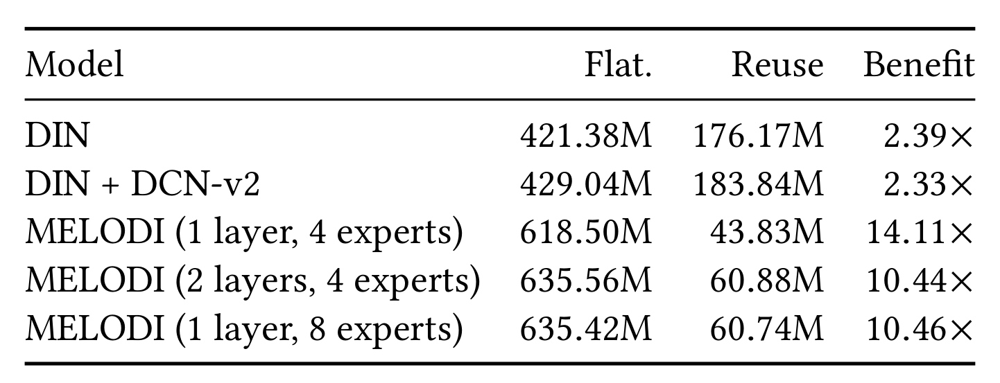
Table 9 固定一百候选与五十项历史，输入宽度同为六十四。Flat 和 Reuse 两列分别统计重复计算与共享后的前向浮点运算，Benefit 为同一行的比值。默认 MELODI 展平有 618.50 M FLOP，高于 DIN 的 421.38 M，复用后却为 43.83 M，约是 DIN 176.17 M 的四分之一。DIN 也能省共享输入的操作，只是按目标与历史配对的激活仍然保留。相似支路扩到两层或八专家，两种复用数都升到约六千万 FLOP，因此共享收益从 14.11 倍降到约十倍。固定历史项的占比下降以后，增加候选可继续摊薄它，整体被更重的候选部分限制。
同一百候选档的实测，MELODI 约 1.21 毫秒，DIN 约 .63 毫秒。算量的领先方向与墙钟时间相反，说明微观计算次数无法替代实现的测量。分析估算排除嵌入查找，包含投影、注意力、交叉和末端打分。按两倍乘加计数，也把部分非乘加操作一起乘了二，所以绝对数只是各架构近似值。线程队列唤醒、不同小矩阵的内核调度、内存访问以及一次历史编码的固定开销都可能让低候选区间的运行表现偏离算量估计。到一千候选，论文报告默认 MELODI 复用比按运算是 16.02 倍，接近实测的约十四倍。结合两档形状可以理解吞吐变大后算力解释力提高，同时保留在实际系统单独测试尾延迟的必要。部署可在模型结构和输入都相同的情况下对历史路径单独计时，再与矩阵乘、逐头交叉和末端感知机的耗时相加对照。分析表的复用优势建立在把历史表示保留并共享的执行形态下。如果中间输出仍被复制到全量候选行，每次前向的内存分配和拷贝可能从另一路抵消理论收益。表中的计算数不会把这种实现差别记到相似算子名下。
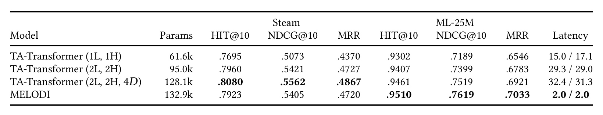
Table 13 最右是单次基准运行在一千候选的时延，左侧的参数量排除所有模型的冻结物品表。主文的一层单头目标 Transformer 为 61.6 千参数，双层双头且提高前馈宽度的变体达到 128.1 千，接近默认 MELODI 的 132.9 千。最接近容量的对照在 Steam 的抽样 NDCG@10 为 .5562，MELODI 为 .5405，表内其 MRR 也以 .4867 超过 .4720。附录另用三个种子重复该 Steam 变体，MRR 为 .4821 ± .0048，且每个种子的六项抽样指标都较高。困难集一次对比它仍更高，但全目录默认 MELODI 反高 .0026。由此不能将单层基线的输赢延伸到同参数模型，简单检查参数量以后还需保留候选集合的差别。
这次取参数量接近也有代价。主表默认 MELODI 的共享时间约 2.0 毫秒，较大变体 Steam/ML-25M 为 32.4/31.3 毫秒，约十六倍。如果优先目标是 Steam 抽样质量且能承担较大的候选计算，预算允许的目标 Transformer 是值得保留的质量对照。如果优先约束单个请求前向支出，MELODI 的共享路径有更明显空间。相同容量的模型在电影数据上预测次序又不同，较大变体 MRR .6921，MELODI .7033。作者还关闭了双头基线对此形状明显更慢的 PyTorch nested tensor 路径，分数变动最大不足 $5\times10^{-8}$。容量表因此让架构差别接受更强的质量检验，同时保持了时延依赖软件实现的边界。还可以注意，参数接近并不意味着运行时输入量接近。自注意力依次更新目标和历史的连接关系，参数在每个候选上下文再次应用，历史计算支出随候选复制。MELODI 的较大参数量包含逐头目标门控，只在候选路径和已汇总的向量交互。复现时应同时记录可训练参数数、共享后的工作区规模和整批请求时间，避免以存储规模代理推理成本。这样也便于构造同延迟预算下的基线来比较结构。
4. 总结
4.1 如何判断值得迁移的部分
我认为这篇论文最适合用于已有共享历史、需要做数百到上千候选打分的系统。迁移价值来自两个可独立验证的性质。对于给定目标和相同权重，逐项相似与池化后相似可以逐值对照。对于所有读取同一段历史的目标，历史侧可以在一次调用中计算和共享。二者成立后，能在现有排名片段上同时度量购买或观看质量以及新增请求成本。若接入系统已经重度依赖 DIN，优先做目标条件池化和显式交叉的替换实验，再调整目标自交叉。因为全部变化一次性上，难以判断收益来自更轻的注意力、双支路结构还是额外参数。接入前还宜核实历史位置、填充、会话截断和事件汇合是否与线上读特征模式一致，再讨论复用范围。
4.2 哪些结果还有限制
- 工业数据来自已被旧系统筛选并记录的候选，两个数据集都是离线回放。任何新排序造成的曝光变化、新增购买和长时用户反馈，都需要随机线上对照确认。全量百分数也无法恢复基线绝对水平，不宜跨业务计算收益价值。
- Steam 与 ML-25M 共用一种冻结文本编码，困难负例也由同类文本近邻定义。实际系统若主要依赖协同、时序、实时内容或多模态特征，候选的混淆程度与归一化现象可能变化。有效历史只涵盖最近五十项，长历史上多个兴趣相互稀释的程度没有观测。
- 公共主表有三个种子，但多数消融、候选集合扩张与工业结论只用有限检查点。稀疏场景容易放大或扭转小幅 MRR 差。容量近似的 Steam 上基线在抽样评价领先，提示单层主基线的相对结果需要用更多执行预算来解释。
- 时延主要覆盖一个 x86 处理器实例、一条历史及固定请求形状。生产流量的候选数量分布、空历史处理、其他服务并发、内存布局和目标分块都会改变 DIN 的竞争区间。激进预计算也仅提供特定计时范围的下限。
- 双支路只规定输入依赖。它没有针对历史匹配和目标流行度各自提供监督，无法从数值拆解业务因果。尤其无标识分组未给出历史覆盖，同样的指标方向无法直接外推到新用户或真正空序列。
4.3 后续对照怎么做
第一，固定投影、共有特征、候选和训练目标，跑低成本基线、逐事件相似、池化后相似、以及不同交叉规模。针对前两种顺序逐项校验分值和梯度容差，再在目标条件权重完全相同的状态下检查差异。比较身份自交叉时保持相似分支参数不变。公开表内按不同种子和负例协议的差异说明，只看一个抽样 MRR 和一个切分容易错过头部或全目录失败。用真实召回后的候选回放并读出首位、前二十位和整体排序三类指标，随后才能判断改动收益集中在哪里。
第二，按请求记录候选规模、两类历史的有效长度与掩码、独立访问次数、进程时延和端到端时延。对一百及五百至一千候选附近做同机复测，加入请求并发、候选分块与局部内存开销。每个档位都运行展平与请求内复用，用同一种计时统计并验证打分一致。这样可以判断公共处理器曲线里的拐点对系统是否有参考价值，也能定位候选侧专家和末端打分何时成为主要消耗。
第三，按已有标识、标识未知与无行为三种情形重做评估，并细分物品曝光频次与事件来源。测试时记录离线收益是否集中在少数高频目标。如果进入线上随机实验，跟踪曝光后的正反馈、购买转化和请求延迟分位数，同时观察整体平台指标与各分组是否同向。这样可检验身份分支的作用是否与结构预期一致，并可量化低候选流量上引入新路径的实际成本。